RAM Search
What it is
RAM Search finds where a game keeps a value in the machine's memory. RAM is the working memory of the machine. Each spot in it has an address, a number that names the spot, written in hexadecimal (base 16) such as 066D. You usually do not know which address holds something like money, lives or speed. RAM Search starts with every address and removes the ones that do not match what you saw happen, until only a few are left.
An address still in the list is called a candidate. A memory domain is one named area of the machine's memory, such as RAM or Battery RAM on the NES. A search looks at one domain at a time.
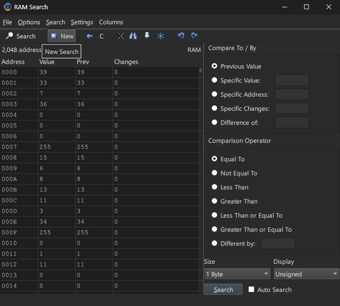
What it is used for
- Finding where a game keeps a value such as money, health, score or position.
- Sending the addresses you find to RAM Watch to follow them.
- Testing an address by poking it, which means writing a new number there, and seeing if the game changes.
- Freezing a value, which means writing it again before every frame so the game cannot change it.
Example, finding Link's rupee count
This example finds the address of Link's rupees in The Legend of Zelda (NES). Link has 42 rupees and stands in a secret cave. Taking the rupee on the floor gives him 30 more, so afterwards he has 72. Two TAStudio branches were used, one before the rupee is taken and one after. Playing the game forward works the same way.
1. Start a search on the right frame
Go to a frame where you know the value. Here Link has 42 rupees. Open the Tools menu and choose RAM Search. A new search starts by itself when the window opens. It uses the machine's main memory domain, which for the NES is RAM, where games keep most values. Leave Size at 1 Byte and Display at Unsigned, because the game keeps Link's rupee count as one byte from 0 to 255.
2. Search for the first value
Under Compare To / By choose Specific Value and type 42. Under Comparison Operator leave Equal To. Before you press Search, Preview Mode colours every row that the search would remove.
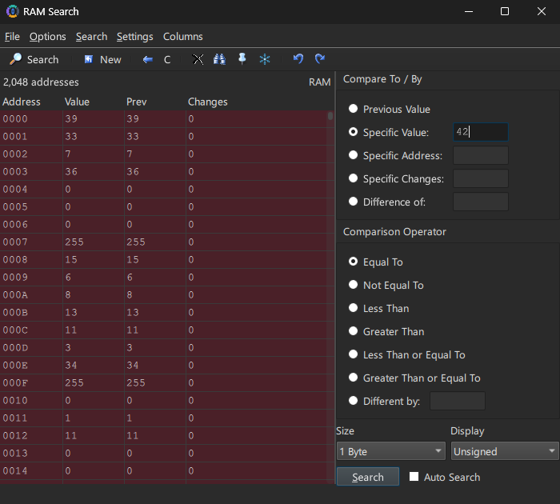
Press Search. Only the addresses that hold 42 now are kept. Here 2,046 addresses are removed and two are left, 0062 and 066D.
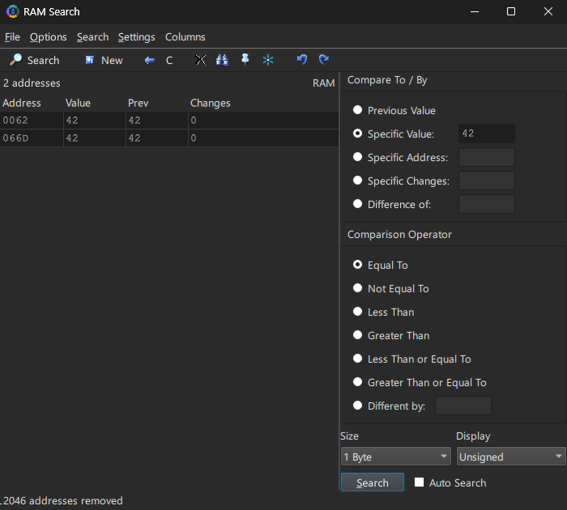
3. Change the value in the game and search again
Play the game until the value changes. Here Link walks over the rupee and the count goes up to 72. The list now shows each candidate's new value. 0062 has become 106, and 066D has become 72. Type 72 in Specific Value. The preview colours 0062, because it does not hold 72.
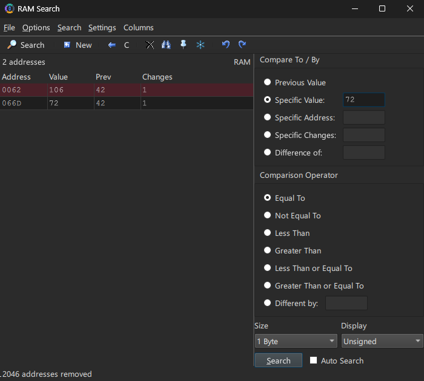
Press Search again. One address is left, 066D. If more than one is left, change the value again in the game and search again until one remains.
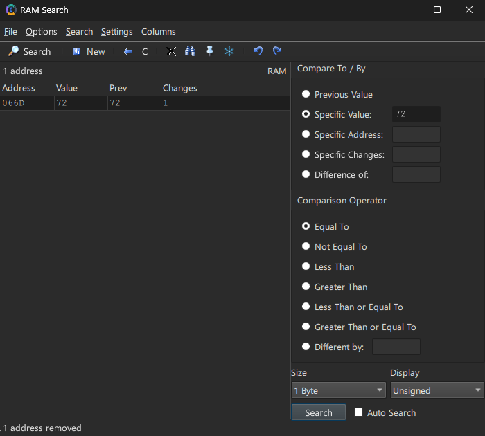
4. Test the address with a poke
An address that matched twice may still be the wrong one. A game can keep a copy of a value, or a number can match by chance. To be sure, write a new value there and see if the game uses it. Select 066D and press Poke (Ctrl+P). Type 99 and press Poke.
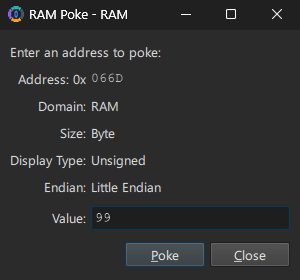
Play the game forward a frame or more. The rupee count on the screen changes to 99, so 066D is the real rupee count. If the number on the screen did not change, the address is a copy or a match by chance. Remove it and test the next one. The list itself shows the new value once the game has run a frame.
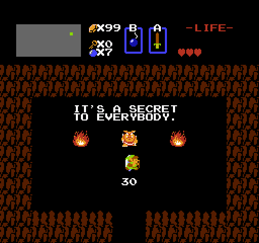
A poke changes only the running game. Loading a branch or a savestate, or going back in TAStudio, puts the old value back. Select the address and press Watch (Ctrl+W) to add it to RAM Watch, or double-click it.
Finding a value you cannot see as a number
Many values are not shown on screen, or are not the number you see. Then compare with the value from before instead of a number you type.
- Choose Previous Value and Greater Than after something went up. In the secret cave, the step the cave's person is on (00AD) goes from 2 to 5 to 8 as Link takes the rupee.
- Choose Previous Value and Less Than after something went down, such as health after a hit.
- Choose Previous Value and Equal To after a time where the value did not change. This removes many addresses quickly.
- Choose Difference of and type 30 with Equal To to keep only addresses that went up by exactly 30, as the rupee count did.
Repeat the change in the game and a search several times. Use Undo (Ctrl+Z) if a search removed too much.
The window
The list of candidates is on the left. The line above it counts the candidates and names the memory domain being searched. The choices for the next search are on the right. The line at the bottom of the window says what the last action did, such as 2046 addresses removed.
Click a column heading to sort the list by that column. Click it again to sort the other way. Drag the edge of a heading to change its width. The list shows values after each frame the game runs.
When Preview Mode is on, red rows are the ones the next search would remove. A frozen address has a light blue row. An address past the end of its memory domain has a peach row.
Columns
| Column | What it shows |
|---|---|
| Address | The candidate's address in hexadecimal. |
| Value | The value there now. |
| Prev | The previous value, the one Previous Value compares with. Options, Define Previous Value chooses what it is. |
| Changes | How many times the value changed since the search started or the counts were cleared. Shown only in Detailed mode. |
| Diff | The value minus the previous value. Hidden at first. |
Toolbar
From left to right. Hold the pointer over a button to see its name.
| Button | What it does |
|---|---|
| Search | Runs a search with the choices on the right. |
| New | Starts a new search. Every address of the domain is a candidate again. |
| Copy Value to Previous (arrow) | Makes every candidate's value now its previous value. |
| C | Clear Change Counts. Sets every Changes count back to 0. Detailed mode only. |
| Cut | Removes the selected candidates. |
| Watch | Adds the selected candidates to RAM Watch. |
| Poke | Opens RAM Poke for the selected candidates. |
| Freeze | Freezes the selected candidates, or unfreezes them. |
| Undo Search, Redo | Takes the last search or removal back, or does it again. |
| New search needed (red arrows) | Shown after you change the mode, the memory domain or Check Mis-aligned. These take effect only in a new search. Click it to start one. |
| Warning (red mark) | Shown when candidates are past the end of the domain. Click it to remove them. |
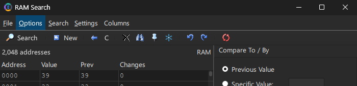
Keys and mouse in the list
| Key | What it does |
|---|---|
| Delete | Removes the selected candidates. |
| Ctrl+C | Copies the selected candidates as .wch lines, which RAM Watch can paste. |
| Double-click | Adds the candidate to RAM Watch. |
| Click, Shift+click, Ctrl+click | Selects one candidate, a range, or adds and removes one from the selection. |
Choices for a search
Compare To / By
What each candidate's value is compared with.
| Choice | What it compares with |
|---|---|
| Previous Value | The candidate's previous value, as Define Previous Value sets it. Use it when you know how a value changed but not what it is. |
| Specific Value | A number you type, in the Display type. Use it when you can see the value, such as 42 rupees. |
| Specific Address | The value at another address you type in hexadecimal. |
| Specific Changes | A number of changes you type, compared with the Changes count. Detailed mode only. |
| Difference of | A number you type, compared with the value minus the previous value. Difference of 30 with Equal To keeps values that went up by 30. Detailed mode only. |
Comparison Operator
How the two are compared.
| Choice | Keeps a candidate when |
|---|---|
| Equal To | the two are the same. |
| Not Equal To | the two differ. |
| Less Than, Greater Than | the value is smaller, or bigger. |
| Less Than or Equal To, Greater Than or Equal To | the value is smaller or the same, or bigger or the same. |
| Different by | the two are apart by exactly the number you type, up or down. |
Size, Display, Search and Auto Search
| Control | What it does |
|---|---|
| Size | How many bytes make one value, 1, 2, 4 or 8. A new size reads the open search again at that size. |
| Display | How values are shown and typed. Unsigned, Signed, Hex and Binary for 1 byte, more choices for bigger sizes, such as fixed point and Float. |
| Search | Runs a search. |
| Auto Search | Runs a search after every frame by itself. The Search button is greyed out while it is on. |
Menus
File
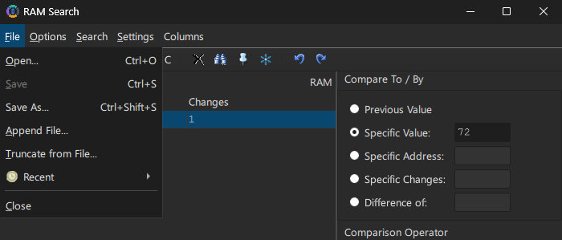
| Item | What it does |
|---|---|
| Open (Ctrl+O) | Opens a .wch watch file. Its addresses become the candidates. |
| Save (Ctrl+S) | Saves the candidates to the file last opened or saved. |
| Save As (Ctrl+Shift+S) | Saves the candidates to a new .wch file, in the Watch folder set in Paths. |
| Append File | Adds the addresses of a .wch file to the candidates. |
| Truncate from File | Removes the addresses of a .wch file from the candidates. |
| Recent | The files opened or saved lately. |
| Close (Alt+F4) | Closes RAM Search. |
Options
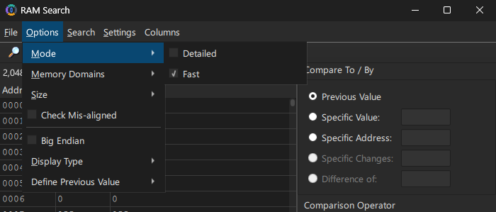
| Item | What it does |
|---|---|
| Mode | Detailed keeps a change count for every candidate. Fast keeps none and uses less memory. In Fast mode the Changes column, Specific Changes, Difference of, Previous Frame and Last Change are not available. Chimera picks Fast by itself for a domain of 1 MiB or more. |
| Memory Domains | The domain to search. Every domain of the machine is listed. |
| Size | 1, 2, 4 or 8 bytes a value. |
| Check Mis-aligned | Also tests values that start at any address, not only at a multiple of the size. Matters for sizes above 1 byte. |
| Big Endian | Reads values of several bytes with the biggest byte first. Leave it off for the NES, which keeps the smallest byte first. |
| Display Type | How values are shown and typed. The choices depend on the size. |
| Define Previous Value | What Previous Value and the Prev column mean. Last Search is the value at the last search. Previous Frame is the value one frame ago. Original is the value when the search started. Last Change is the value before it last changed. Previous Frame and Last Change are for Detailed mode only. |
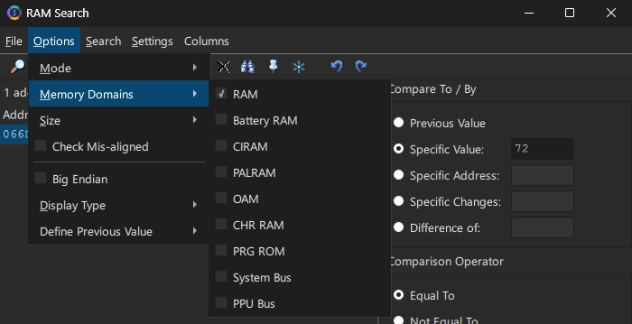
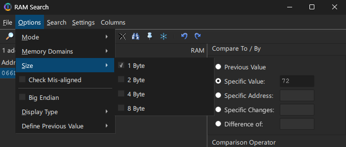
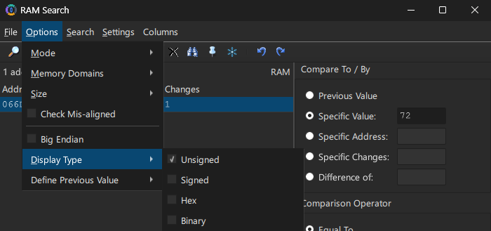
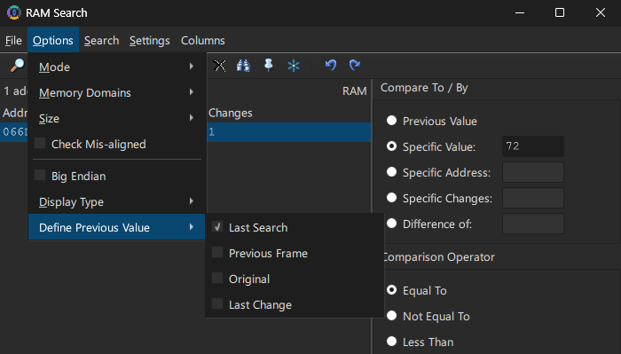
Search
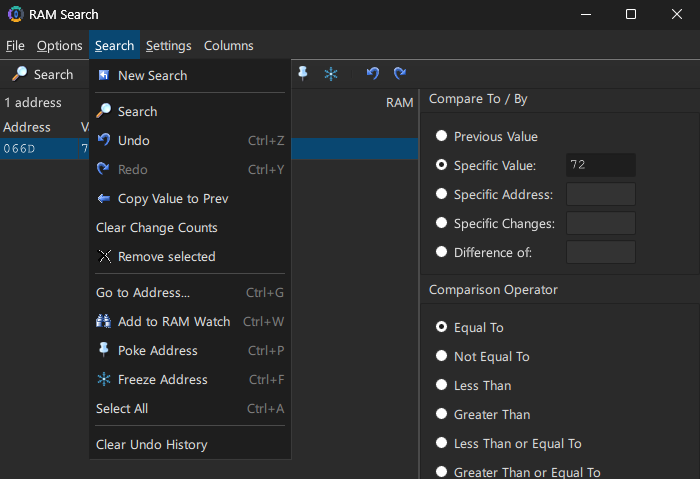
| Item | What it does |
|---|---|
| New Search | Starts a new search with every address of the domain. |
| Search | Runs a search. |
| Undo (Ctrl+Z), Redo (Ctrl+Y) | Takes the last search or removal back, or does it again. |
| Copy Value to Prev | Makes every candidate's value now its previous value. |
| Clear Change Counts | Sets every Changes count back to 0. |
| Remove selected (Delete) | Removes the selected candidates. Undo brings them back. |
| Go to Address (Ctrl+G) | Opens Go to Address to jump to a candidate. |
| Add to RAM Watch (Ctrl+W) | Adds the selected candidates to RAM Watch, at the search's size, display and byte order, and opens RAM Watch. |
| Poke Address (Ctrl+P) | Opens RAM Poke for the selected candidates. |
| Freeze Address (Ctrl+F) | Freezes the selected candidates at their values now, or unfreezes them. Frozen values last while the game stays open. |
| Select All (Ctrl+A) | Selects every candidate, or none when all are selected. |
| Clear Undo History | Forgets the searches Undo could take back. |
Settings
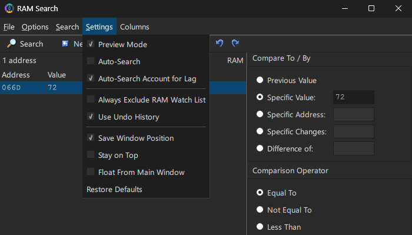
| Item | What it does |
|---|---|
| Preview Mode | Colours red the rows the next search would remove, so you can see the result before you press Search. On at first. |
| Auto-Search | Runs a search after every frame. The same as the Auto Search box. |
| Auto-Search Account for Lag | Skips Auto-Search after a lag frame, a frame in which the game did not read the controls. On at first. |
| Always Exclude RAM Watch List | Removes from the search the addresses RAM Watch already has. An address added to RAM Watch is then taken out of the search. |
| Use Undo History | Keeps the searches so Undo can take them back. On at first. Turning it off saves memory. |
| Save Window Position | Opens RAM Search where it was left, at the same size. |
| Stay on Top | Keeps RAM Search above other windows. Shown only where the system allows it. |
| Float From Main Window | Makes RAM Search a window of its own. When it is off, RAM Search belongs to the main window, stays above it and is minimized with it. |
| Restore Defaults | Turns Preview Mode, Auto-Search Account for Lag and Use Undo History on, Always Exclude RAM Watch List off, hides the Diff column, and resets the window settings. |
Columns
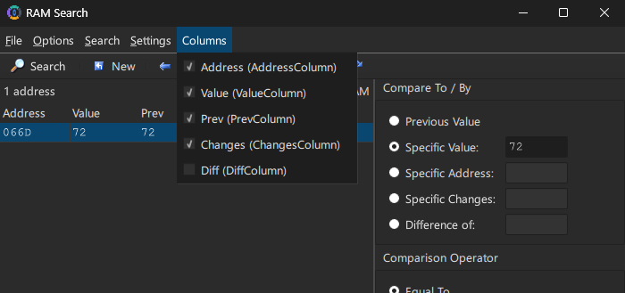
Each item shows or hides one column. The name in brackets is the column's name inside Chimera.
Right-click menu
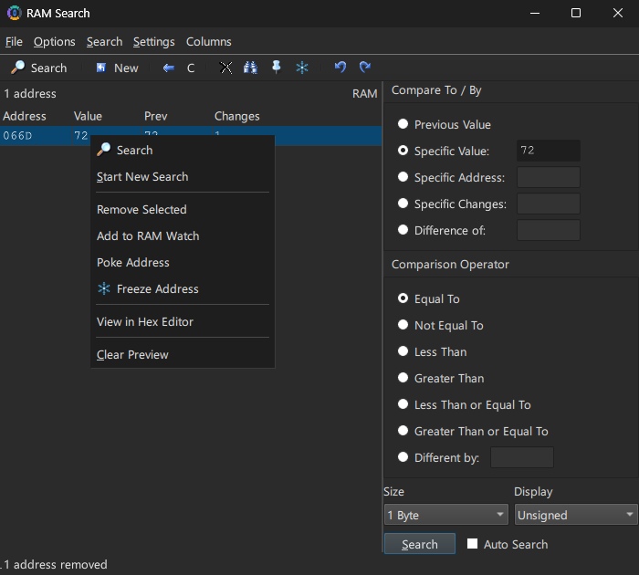
| Item | What it does |
|---|---|
| Search | Runs a search. |
| Start New Search | Starts a new search. |
| Remove Selected | Removes the selected candidates. |
| Add to RAM Watch | Adds the selected candidates to RAM Watch. |
| Poke Address | Opens RAM Poke. |
| Freeze Address | Freezes the selected candidates. On frozen ones it reads Unfreeze Address. |
| Unfreeze All | Shown only when an address is frozen. Unfreezes every address. |
| View in Hex Editor | Opens the Hex Editor at the first selected address. |
| Clear Preview | Takes the preview colours off until the next frame. |
When more than 1,000 candidates are selected, Add to RAM Watch, Poke, Freeze, Copy and View in Hex Editor ask before they go on.
Windows that RAM Search opens
RAM Poke
RAM Poke writes a value to the selected candidates once. It shows the address (up to ten of them), the domain, size, display type and byte order. Type the value in the display type and press Poke. Close shuts it without writing. The picture is in the example above.
Go to Address
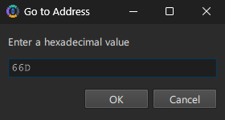
Type an address in hexadecimal and press OK. The list jumps to that candidate and selects it. If the address is not a candidate, the text stays selected so you can type another.
Hotkeys
The RAM Search tab on the Hotkeys page lets you bind keys for New Search, Do Search, Previous Compare To, Next Compare To, Previous Operator and Next Operator.